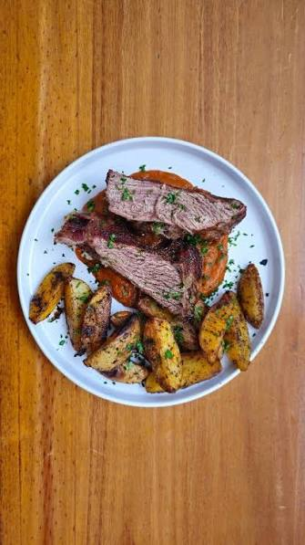
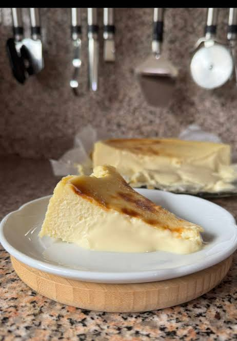

Receta Carne al horno con papas

Ingredientes:
1 kg de carne para horno, 1 kg de papas, 2 cebollas, aceite, sal, pimienta, ajo y romero.
Pasos:
- Preparar: precalentar el horno a 200 °C y cortar las papas y cebollas en trozos.
- Condimentar: salpimentar la carne y agregar ajo, romero y un poco de aceite.
- Armar: colocar la carne en una fuente y distribuir las papas y cebollas alrededor.
- Hornear: cocinar aproximadamente 60–90 minutos, dando vuelta las papas a mitad de cocción.
- Servir: comprobar que la carne esté cocida al punto deseado, dejar reposar unos minutos y servir con las
papas.
Receta Torta vasca

Ingredientes:
600 g de queso crema, 200 g de azúcar, 4 huevos, 300 ml de crema de leche, 1 cda de harina y esencia de
vainilla.
Pasos:
- Preparar: precalentar el horno a 200 °C y forrar un molde con papel manteca.
- Mezclar: batir el queso crema con el azúcar hasta obtener una crema.
- Agregar: incorporar los huevos de a uno, luego la crema, la vainilla y la harina.
- Hornear: colocar la mezcla en el molde y hornear durante 40–50 minutos, hasta que la superficie quede bien
dorada.
- Enfriar: dejar enfriar a temperatura ambiente y luego llevar a la heladera unas horas antes de servir.